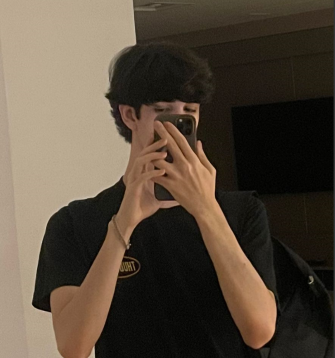

A IT SUPPORT é uma empresa especializada em suporte técnico de TI, com mais de 10 anos de experiência ajudando empresas e usuários a manter seus sistemas funcionando com eficiência, segurança e alta performance. Trabalhamos com manutenção de computadores, redes, servidores, segurança da informação, consultoria e suporte remoto.
Prover soluções tecnológicas rápidas, eficientes e acessíveis, garantindo tranquilidade e produtividade aos nossos clientes.
Ser referência em suporte técnico no Brasil, reconhecidos pela excelência e confiabilidade.
Transparência, ética, compromisso, segurança e inovação constante.
Técnico de Suporte Avançado, Designer do Site e Dono
Técnico de Suporte Avançado, Designer e Vice Dono do Site
Técnico de Suporte Avançado, Analista de Segurança da Informação e Designer do Site

Técnico de Suporte Avançado, Analista de Segurança da Informação e Designer do Site